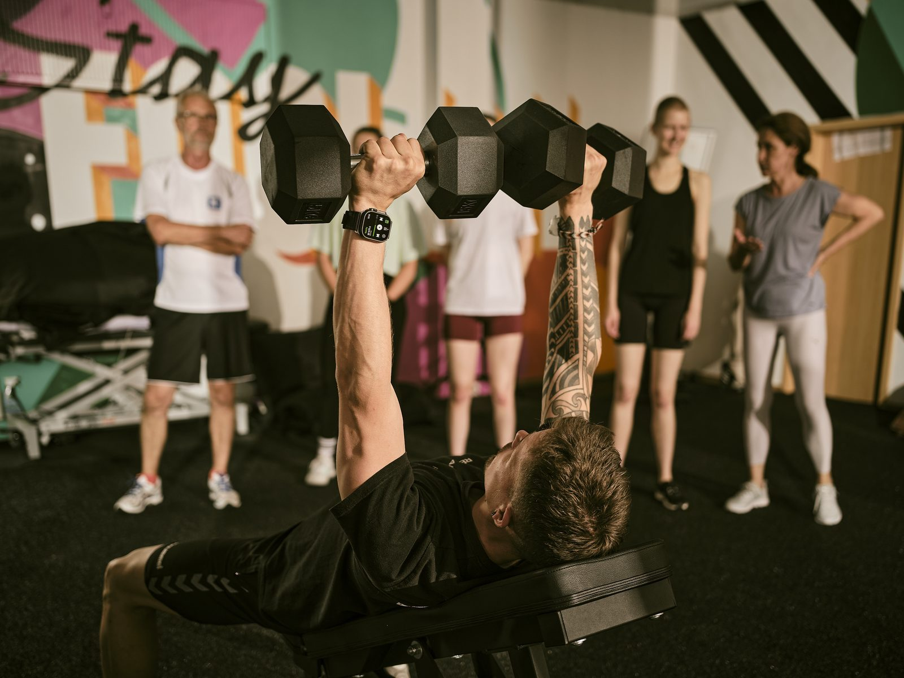
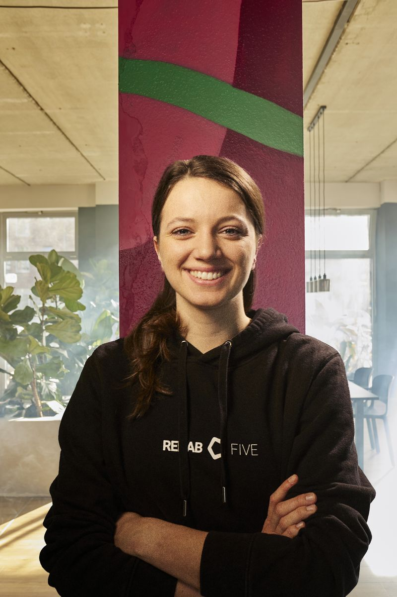
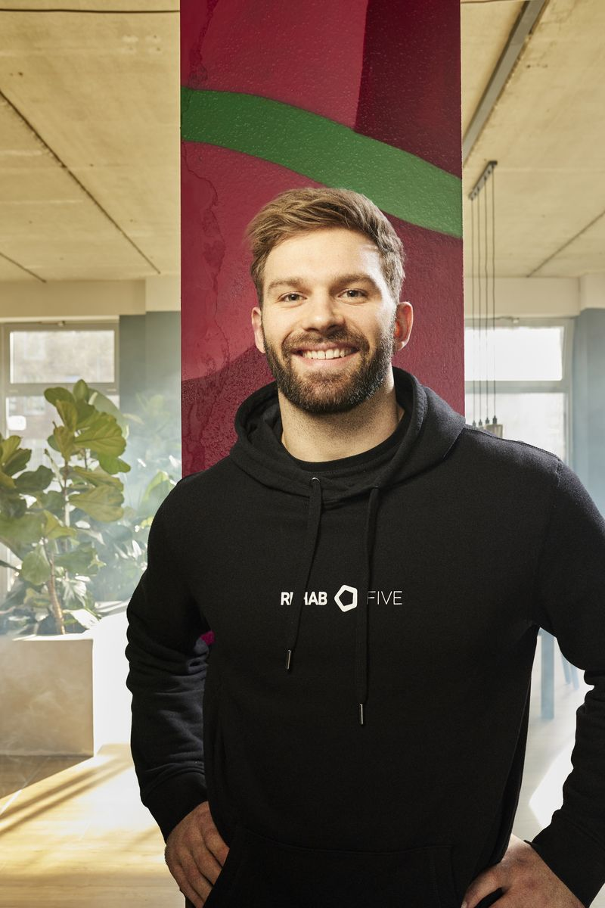
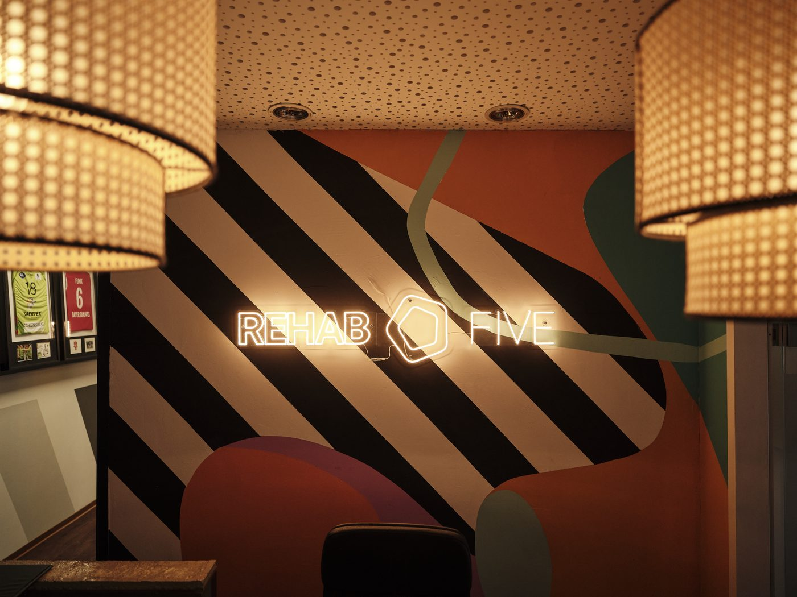

01
Therapie
Klassische Physio, manuelle Therapie, Lymphdrainage. Das, was bei anderen das Ganze ist, ist bei uns der Anfang.
Wir hören nicht auf, wo andere aufhören. Eine Praxis in Münster für Menschen, die mehr wollen als ein Rezept — und mehr als sechs Sitzungen, bevor sie wieder allein gelassen werden.

Sechs Termine sind kein Plan.
Sie sind ein Anfang.
Niemand sonst in Münster hat alle fünf Bereiche unter einem Dach. Therapie übergibt an Training. Training an Athletik. Athletik an Prävention. Diagnostik beobachtet den gesamten Bogen.
Klassische Physio, manuelle Therapie, Lymphdrainage. Das, was bei anderen das Ganze ist, ist bei uns der Anfang.
Wo Therapie endet, beginnt Bewegung. Strukturiert, betreut, mit Plan — keine generischen Übungsblätter.
Aufbau über das Vor-Schmerz-Niveau hinaus. Für die, die nicht nur zurück wollen — sondern weiter.
Damit die Geschichte nicht von vorne beginnt. Mit Wissen über deinen Körper, das andere Praxen nicht vermitteln.
Was dein MRT nicht zeigt, sehen wir in Bewegung. Datenbasis statt Bauchgefühl.
„Fünf Säulen. Ein Weg."
Rezept. Sechs Sitzungen. Entlassen.
In sechs Wochen wieder.
Die deutsche Physio-Norm behandelt die Abwesenheit von Symptomen als Endzustand. Patient als Fall-Nummer. Der Körper als passives Objekt, das man „repariert" und zurückschickt.
Wir glauben, das reicht nicht. Nicht für Menschen, die mit 42 mal Läufer waren und heute fragen: „Ist das jetzt einfach so?" Nicht für die, die sich nach einer OP nicht „rehabilitiert" fühlen wollen, sondern stärker als vorher.
Eine bezahlte Bewegungsdiagnostik. Rezeptfrei, datenbasiert, mit Bericht zum Mitnehmen — und einem Plan, der nicht nach sechs Sitzungen endet.
Dein Knie tut weh. Dein MRT sagt: alles in Ordnung. Wir zeigen dir, warum beides stimmen kann — und was eine echte Bewegungsdiagnostik aufdeckt, das ein dreiminütiger Orthopäden-Termin nicht zeigen kann.
Was du bekommst: 60 Minuten Diagnostik · schriftlicher Befund · Empfehlung für Therapie, Training oder Athletik — du entscheidest, was als Nächstes kommt.
Daten statt Bauchgefühl.
Die häufigsten Wege zu uns. Klick rein, wenn dich etwas anspricht — oder buch direkt eine Diagnostik, wenn du nicht weißt, wo du anfangen sollst.
Bandscheibenvorfall, chronischer Rücken, Iliosakralgelenk — wir bringen Stabilität zurück und halten sie.
Mehr erfahren →Vor und nach OP, Meniskus, Kreuzband, Arthrose. Strukturierte Reha mit klarem Ziel.
Mehr erfahren →Impingement, Frozen Shoulder, chronische Verspannungen. Befund, Therapie, Aufbau.
Mehr erfahren →Bänderriss, Muskelfaserriss. Return-to-Sport — nicht „in sechs Wochen wieder", sondern wenn der Körper bereit ist.
Mehr erfahren →Strukturierte Nachsorge, die nicht endet, wenn die Rezeptbox leer ist. Therapie → Training → Athletik.
Mehr erfahren →Lymphdrainage, Kiefer, neurologische Therapie, Migräne. Sprich mit uns — wir sagen ehrlich, ob wir der richtige Ort sind.
Mehr erfahren →Jede unserer Comeback Cards markiert einen Moment: Ein Patient hat sein Return-to-X-Ziel erreicht. Vom Therapeuten signiert, fortlaufend nummeriert, in unserer Praxis und hier öffentlich. Wenn du wissen willst, was Comeback heißt — diese Wand sagt es.
14 Monate · zurück auf der Promenade · Mai 2026
9 Monate Schulter-Reha · zurück auf der Platte
Bandscheibenvorfall · zurück im Alltag
Hüft-Arthrose · zurück auf der Strecke
+47 Comeback Cards seit Jahresanfang. Jede Karte ist ein Mensch, der nicht „behandelt" wurde — sondern zurückgekommen ist. Wenn du deine Karte willst, fangen wir mit einer Diagnostik an.
Mit Rezept oder direkt zur Diagnostik. Beim Erstgespräch nehmen wir uns Zeit für deine Geschichte — nicht nur für deinen Befund.
Wir entscheiden gemeinsam: Wo fangen wir an, wo gehen wir hin? Therapie, Training, Athletik, Prävention — du weißt am Ende, was wann kommt.
Wir entlassen dich nicht nach Sitzung sechs. Wir bleiben dran, übergeben sauber zwischen den Säulen — bis zur Comeback Card.
Spezialisierungen statt Generalisten. Wir matchen dich mit der Person, die zu deiner Beschwerde passt — und die mit dir den gesamten Weg geht.

Gründer & CEO · Manuelle Therapie · Athletik

Head of Physio · Friedrich-Ebert-Str.

2nd Head Physio · Friedrich-Ebert-Str.

Physiotherapeutin

Physiotherapeut

Physio · B.A. Sportwissenschaften

COO · Operations & Webflow
Nein, nicht zwingend. Über die Blankoverordnung kannst du auch ohne Rezept zu uns kommen. Oder du buchst direkt eine Diagnostik-Sitzung — ohne Umweg über Hausarzt und Orthopäde.
Alle gesetzlichen und privaten. Privatabrechnung übernehmen wir direkt. Selbstzahler-Leistungen sind klar ausgewiesen, Preise besprechen wir offen vor der ersten Sitzung.
Wir haben alle fünf Säulen unter einem Dach: Therapie, Training, Athletik, Prävention, Diagnostik. Niemand sonst in Münster hat das. Wir behandeln dich nicht und entlassen dich — wir bleiben dran.
In der Regel innerhalb von 1–2 Wochen. Diagnostik-Sitzungen oft schneller, weil sie nicht auf Rezept laufen.
Dafür haben wir den REHAB FIVE HEALTH CLUB — die Premium-Adresse für Personal Training, Athletik und Diagnostik. Wir übergeben sauber, du läufst nicht zwischen Welten verloren.
Eine signierte, fortlaufend nummerierte Karte für jeden Patienten, der sein Return-to-X-Ziel erreicht hat. Marathon nach Knie-OP, Bühne nach Bandscheibenvorfall, Volleyball nach Schulter — Comeback ist ein Status-Moment, und wir machen ihn sichtbar.
Fundierte Artikel aus der Praxis — über Schmerzforschung, häufige Diagnosen und was die aktuelle Sportwissenschaft für deine Therapie bedeutet. Geschrieben von Therapeut*innen, nicht von SEO-Agenturen.
Warum dein Schmerz nicht immer das Problem ist und was die Neurowissenschaft heute weiß.
Artikel lesen → AchillessehneEccentric Training, Belastungssteuerung und warum Ruhe meistens die falsche Antwort ist.
Artikel lesen → SchulterWann konservativ, wann OP — und was nach der ersten Diagnose wirklich passiert.
Artikel lesen → WirbelsäuleWie aktive Therapie und gezieltes Training die Beweglichkeit erhalten.
Artikel lesen → Achillessehne · RehaDer Weg über alle fünf Säulen: Therapie → Training → Athletik → Comeback.
Artikel lesen →Studien, Erklärstücke und Patient*innen-Stories — wir veröffentlichen kontinuierlich.
Friedrich-Ebert-Straße & Scharnhorststraße. Beide Standorte mit voller therapeutischer Ausstattung, eigenen Therapeut*innen-Teams und langen Öffnungszeiten.
48153 Münster · Aaseeviertel
Öffnungszeiten
Mo–Fr 07:30–20:00
Sa nach Vereinbarung
Telefon
0251 / 74788-200
Parken
Vor dem Haus & Parkhaus 2 Min

48149 Münster
Öffnungszeiten
Mo–Fr 08:00–19:00
Telefon
0251 / 74788-100
Parken
Eigene Parkplätze
Jeder Standort hat eine eigene Detail-Seite mit Galerie, Anfahrt und Team — klicke eine Karte für mehr.
REHAB FIVE ist Therapie. Für Training, Ernährung und Firmen haben wir Schwestermarken gebaut — jede mit eigener Welt, alle mit derselben Methode.
Membership, Personal Training, Athletik, Diagnostik. Säulen 02–05 als eigenständiger Premium-Bereich.
Zum Health Club →Ernährungs-Coaching und 1:1-Programme. Eigenständige Schwesternmarke der Gruppe.
Zur Nutrition →BGM, Workshops, Gesundheitstage, Mannschaftstherapie. Fünf Säulen für ganze Belegschaften.
Zum Business-Bereich →